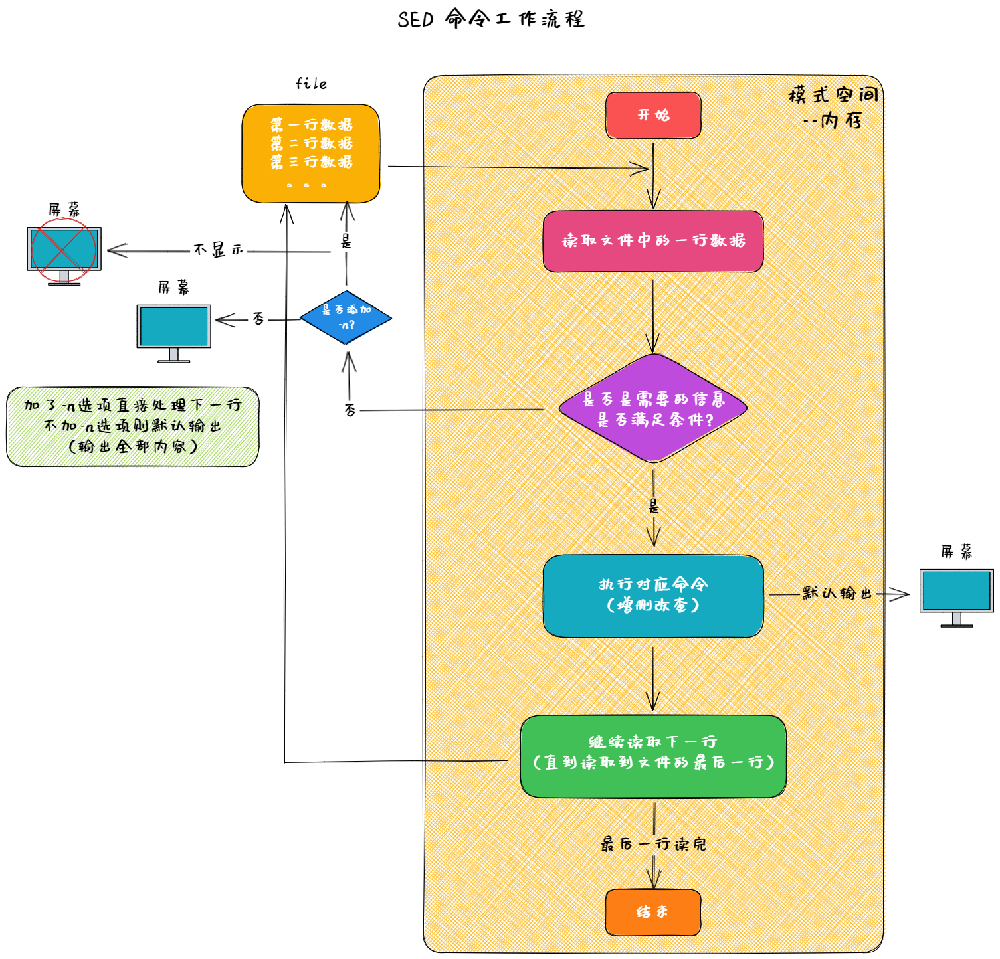

linux
sed 流编辑器
sed 执行过程

sed 命令选项
选项
作用
-n
取消默认 sed 输出，只输出处理后的结果，通常与 p 动作一起使用
-r
支持使用扩展正则表达式
-i
直接编辑文件，不使用 -i ，修改的只是缓冲区的内容
-e
多次编辑，和管道符作用一样
-f
运行sed脚本中的编辑命令
sed 编辑命令
动作
描述
a\
新增，在当前行下面插入文本 （用 或者空格都可以）
i\
插入，在当前行上面插入文本
c\
修改，把选定行修改为新的文本
d
删除，删除选定行
p
打印，打印匹配的内容，通常与 -n 选项一起使用
s
替换，匹配内容并进行替换，支持正则
n
读取下一个输入行，然后执行下一个命令
w
保存模式匹配的行至指定文件
r
读取指定文件的文本至模式空间中匹配到的行后
=
为模式空间中的行打印行号
!
模式空间中匹配行取反处理
sed 替换标记
符号
描述
g
行内全部替换，不写默认替换每行第一个，ng 表示替换第 n 次开始匹配到的内容
\n
子字符串匹配标记；\n表示第几个分组里的内容
&
已匹配字符串标记
s 替换命令说明
sed 匹配范围
范围
解释
全文
全文处理
指定行
指定文件的某一行 ；'1p' 表示打印第一行
指定模式
/pattern/ 被模式匹配到的每一行； '/^H/' 表示H开头的行
指定范围区间
范围内的每一行；'1,3' 表示第1行到第3行；'1,+2' 表示第1行和后两行；'$'表示最后一行
指定步长
根据步长匹配行；'1~2' 表示 1,3,5,7,... 奇数行； '2~2' 表示2,4,6,8...偶数行
行范围和模式范围可以组合成范围区间使用
sed命令示例
# 打印第5行
[ root@localhost ~] # sed -n '5p' test.txt
# 在每一行下面添加文本"day day up"（不修改原文件）
[ root@localhost ~] # sed 'a day day up' test.txt
# 在第1行上面添加两行 "abcde" 和 "ABCDE"
[ root@localhost ~] # sed -i '1i abcde\nABCDE' test.txt
# 把最后一行更改为"66666"
[ root@localhost ~] # sed -i '$c 66666' test.txt
# 把所有的字符'A'修改为'a'
[ root@localhost ~] # sed -i 's/A/a/g' test.txt
# 删除前2行
[ root@localhost ~] # sed -i '1,2d' test.txt
# 将'H'开头的行写入文件 file.txt
[ root@localhost ~] # sed -n '/^H/w file.txt' test.txt
# 将file.txt文件里的内容写入第5行下面
[ root@localhost ~] # sed -i '5r file.txt' test.txt
# 删除'l'开头的下一行
[ root@localhost ~] # sed -i '/^l/{n;d;}' test.txt
# 打印2-5行之外的行
[ root@localhost ~] # sed -n '2,5!p' test.txt
# 将所有出现一次以上的字母'b'修改成数字'8'打印出来
[ root@localhost ~] # sed -nr 's/b+/8/gp' test.txt
# 在第6行的内容删除 然后修改所有'*'为'#'
[ root@localhost ~] # sed -i -e '5d' -e 's/*/#/g' test.txt
# 新建文件file.sed里面书写sed脚本 将test.txt文件中第一行到'?'结尾的行打印出来
[ root@localhost ~] # echo "1,/?$/p" > file.sed
[ root@localhost ~] # sed -n -f file.sed test.txt
## 后向引用
先保护后使用
# 将 "hello world" 改成 "[hello] world"
[ root@localhost ~] # echo "hello world" | sed -r 's/(\w+)/[\1]/g'
[ root@localhost ~] # echo "hello world" | sed -r 's/hello/[&]/g'
# 将每一行第一次连续出现3次的字符串替换成 ‘嗯哼~’
[ root@localhost ~] # sed -r -i 's/([a-z])\1\1/嗯哼~/' test.txt
# 获取linux的ip地址
[ root@localhost ~] # ip a s eth0
9 : eth0: <> mtu 1500 group default qlen 1
link/ether d8:c4:97:92:73:08
inet 169 .254.248.50/16 brd 169 .254.255.255 scope global dynamic
valid_lft forever preferred_lft forever
inet6 fe80::5219:3165:3e7d:41fb/64 scope link dynamic
valid_lft forever preferred_lft forever
[ root@localhost ~] # ip a s eth0 | sed -nr '3s/(^.*t )(.*)(\/.*$)/\2/gp'
# 使用sed命令将任意3个小写字母倒置 例如：'abc'改为'cba'
[ root@localhost ~] # echo "abc“ | sed -n 's/([a-z])([0-z])(a-z)/\3\2\1/p'
{kind=link}